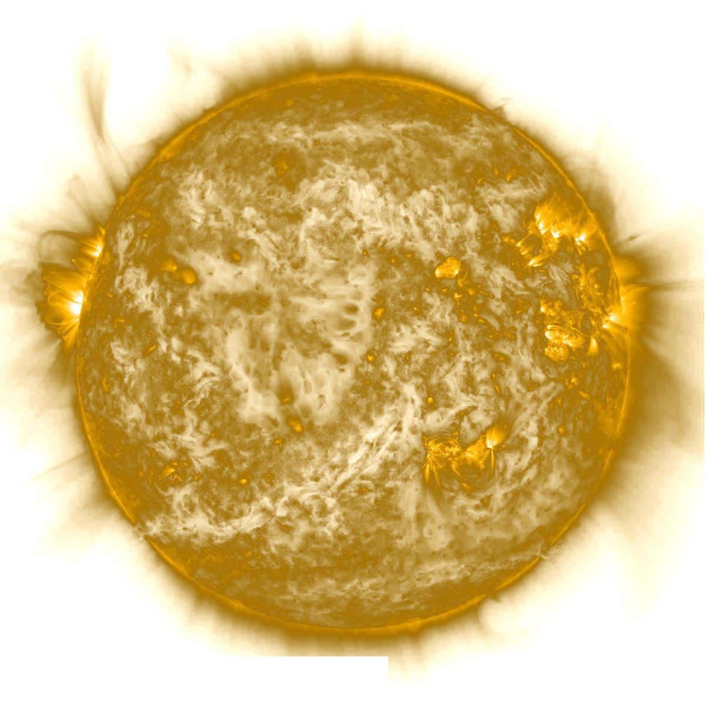
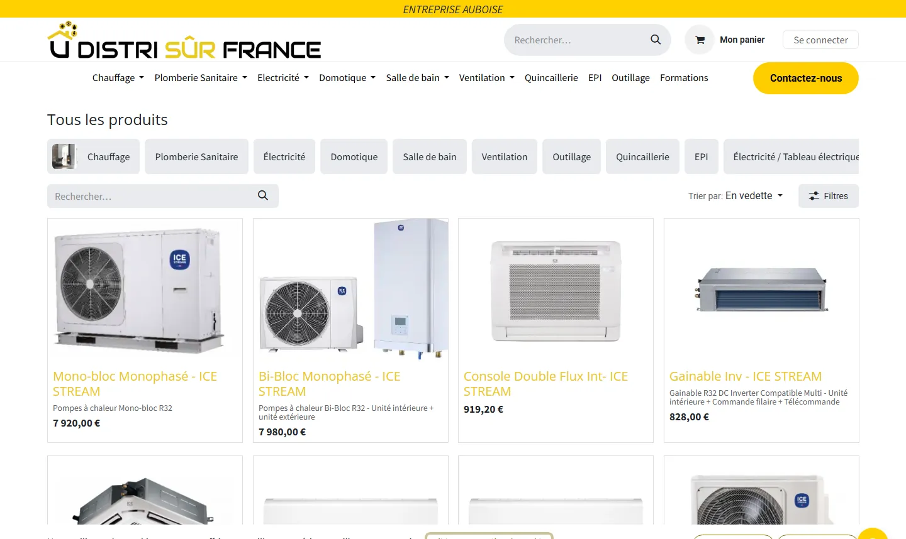
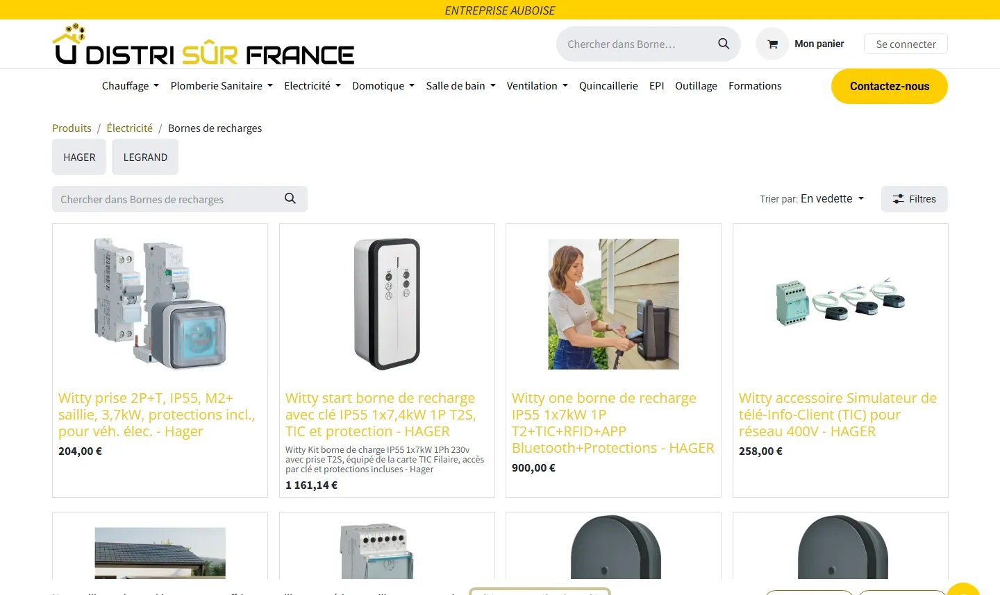
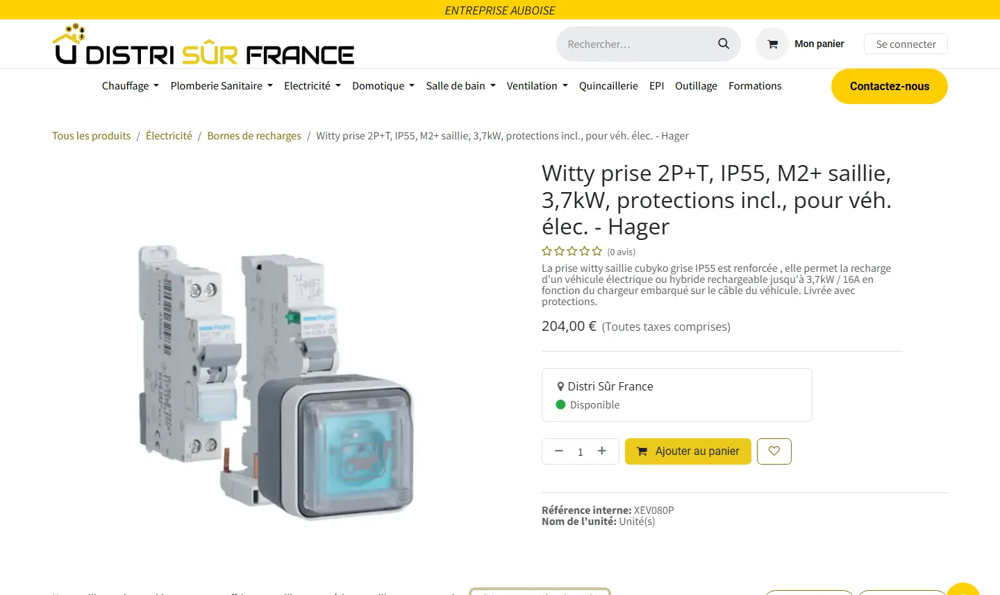
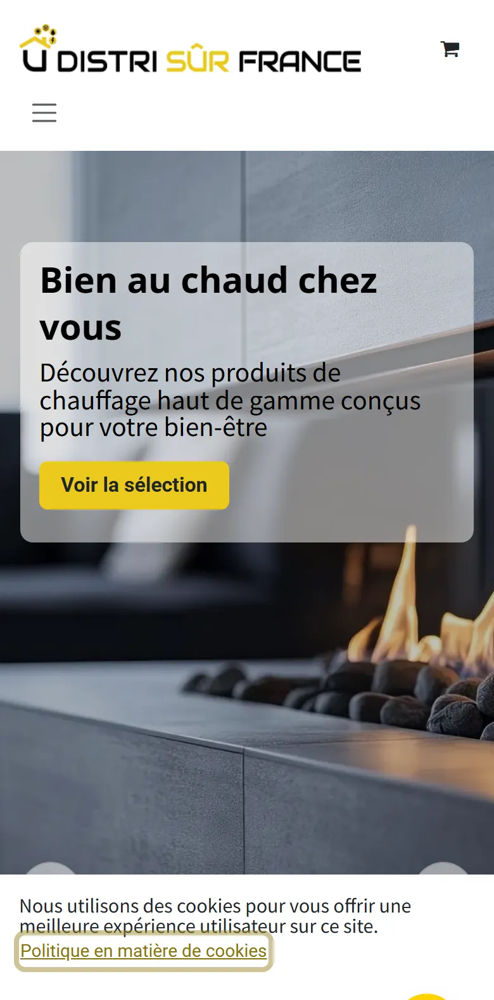

Work2024
Distri Sûr France
Ten months of work-study to build a company’s online shop.
- Setting
- Work-study
- Where
- Distri Sûr France, Troyes
- Period
- November 2023 to August 2024
- Team
- With the sales teams
- My role
- Full Stack E-commerce Web Developer
Company project, no public repository.


In short
- The problem
- A company in the Aube with no online shop.
- My part
- As a work-study student: the Figma mockups, front end and back end on Odoo, SEO.
- The result
- The shop went live after ten months, from mockups to production.
Context
Distri Sûr France sells heating, plumbing and electrical equipment in the Aube region. Over ten months of work-study, I designed and built its e-commerce site, from the first mockups to launch.
The problem
The company had no online shop: it had to be designed, built and put into production during the work-study year.
What I built



The catalogue
The catalogue and content integrated in Odoo, sorted by product family.
The product page
The pages and checkout flow designed in Figma and approved with the business teams.
On mobile
The same shop, designed for phones as well.
Technical decisions
- Mockups first
- Every page was designed in Figma and approved by the business teams before being built.
- Odoo end to end
- The shop’s front end and back end are built on Odoo, with a full e-commerce integration.
- Search
- SEO work so that the products can be found.
The result
- 10months, from mockups to launch
The shop is live: it is the company’s official e-commerce site.
What I took away
Much of the work was reconciling what the sales team wanted with what Odoo allowed, then checking that customers could find their way.
Stack
- Odoo
- Python
- HTML
- CSS
- Figma
- SEO